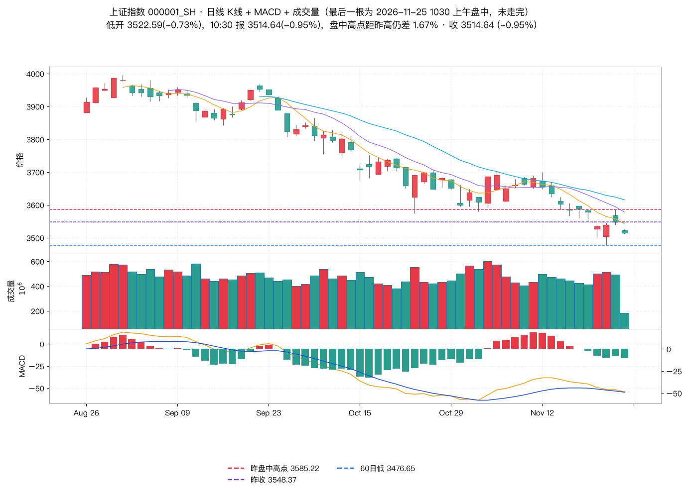
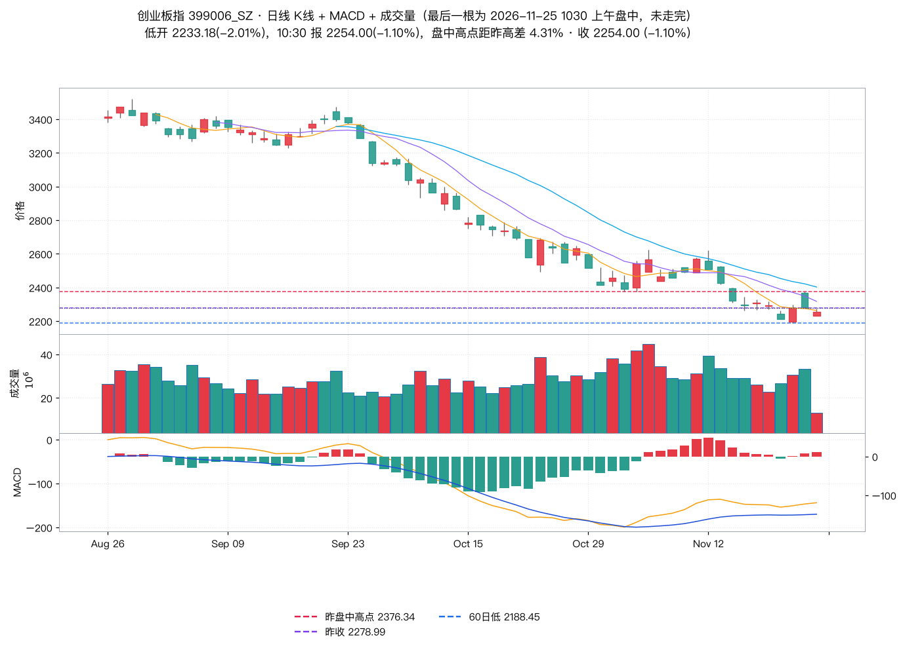
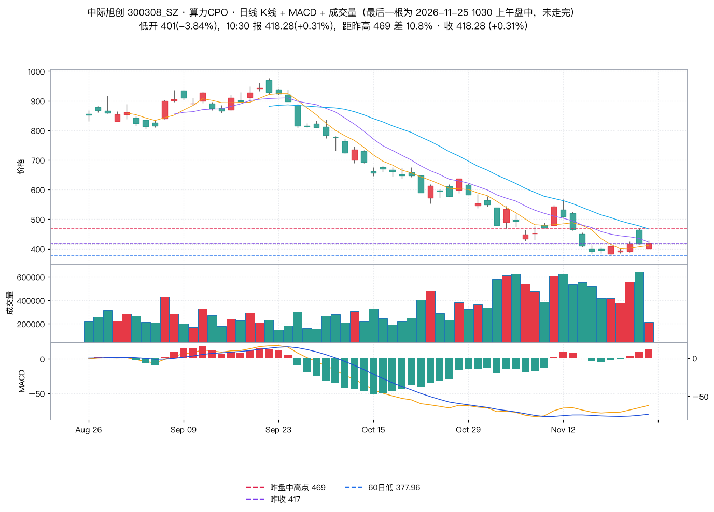

结论：低开高走，但没站上昨天盘中高点，弱势震荡格局未破，仓位保持低位。 10:30 上证 3514.64（-0.95%）、创业板指 2254.00（-1.10%），三大指数高点距昨高仍差 1.67%~4.31%；两市成交 5747.3 亿、较昨同刻缩量 33.3%。算力只有 CPO 与 PCB 回血，国产算力、半导体仍在跌，资金转向低位消费医药。防御方向只当超跌反弹，不追涨。
| 老师口径 | 实测（10:30 腾讯分时 / 11:30 快照） | 判定 |
|---|---|---|
| 「受外围影响明显低开」 | 三大指数集体跳空：上证开 3522.59（-0.73%）、深成 10272.19（-1.45%）、创业板 2233.18（-2.01%），成长端跌得最多 | 一致 |
| 「而后震荡上行，情绪继续修复」 | 10:30 上证 3514.64（自低 3511.40 回升 +0.09%）、深成 10348.58（+0.74%）、创业板 2254.00（+0.93%），但三者仍全在昨收之下 | 一致 |
| 「三大指数仍弱势震荡，需站稳昨天盘中高点」 | 10:30 高点距昨高：上证 3585.22 差 1.67%、深成 10729.13 差 3.09%、创业板 2376.34 差 4.31%，均未触达 | 一致 |
| 「算力方向低开之后震荡上行」 | 算力/CPO 篮子 +0.52%、元件/PCB +1.21%；但国产算力 -1.50%、半导体 -3.01%（6 只全跌）、申万电子 -2.08%（95 涨/392 跌） | 口径差异 |
| 「资金流向了消费、医药医疗以及军工装备等低位防御方向」 | 申万 L1：商贸零售 +2.55%、社会服务 +1.71%、食品饮料 +1.47%、医药生物 +1.46%、国防军工 +0.25%（74 涨/61 跌）；涨停池化学制药 10 只、一般零售 7 只 | 一致 |
| 「情绪继续修复」 | 涨停 60、跌停 2、炸板 14、涨 2757/跌 2340；但昨日涨停 55 只中 32 只今日下跌（15 只跌超 5%），接力断层 | 部分成立 |
判定词：一致 / 口径差异 / 部分成立（老师定性按原文引用）
① 低开幅度：上证 -0.73%、深成 -1.45%、创业板 -2.01%，成长端首当其冲。低开后回抽：10:30 上证 3514.64（自低 3511.40 回升 +0.09%）、深成 10348.58（自 10272.19 回升 +0.74%）、创业板 2254.00（+0.93%），只是把开盘缺口补回一半，三个指数仍全部低于昨收（3548.37 / 10423.60 / 2278.99）。② 老师的判据位没到：上证昨盘中高点 3585.22，10:30 最高 3525.40，差 1.67%；深成 10729.13 差 3.09%；创业板 2376.34 差 4.31% —— 弱势震荡格局未破。

上证指数：10:30 报 3514.64，未触昨盘中高点 3585.22

创业板指：10:30 报 2254.00，距昨盘中高点 2376.34 差 4.31%
两市 10:30 成交 5747.3 亿（沪 2609.7 + 深 3137.6），昨同刻 8614.5 亿，缩量 33.3%。昨同刻占昨日全天（16550.8 亿）52.05%，同比例外推今日全天约 1.10 万亿，比昨日缩三成。11:30 全市场涨 2757 / 跌 2340 / 平 124，跌超 5% 147 只、涨超 5% 138 只；涨停 60、跌停 2、炸板 14。接力断层：昨日涨停 55 只今日 23 涨 / 32 跌，其中 15 只跌超 5% —— 「情绪继续修复」只体现在涨停家数，接力质量跟不上。
① 算力内部分化：算力/CPO 篮子 +0.52%（中际旭创低开 401 → 高 428.30 → 10:30 报 418.28，+0.31%；胜宏科技 +3.16%）、元件/PCB +1.21%；但国产算力 -1.50%、半导体 -3.01%、人形机器人 -3.64%、申万电子 -2.08% —— 「算力低开震荡上行」只兑现到 CPO 与 PCB 一段。② 防御方向接力：申万 L1 涨幅榜前列换成商贸零售 +2.55%、社会服务 +1.71%、食品饮料 +1.47%、医药生物 +1.46%，国防军工 +0.25% 且 74 涨/61 跌全线飘红；涨停池里化学制药 10 只、一般零售 7 只、中药 4 只。但涨的是低位中小盘：医药龙头药明康德 -1.50%、军工中国船舶 -1.47%、消费伊利股份 +0.33% —— 正好印证「相对低位的防御方向」，也印证「只能当超跌反弹看」。

中际旭创（算力CPO）：低开 401 后回抽 418.28，仍在昨高 469 之下
① 「算力方向低开之后震荡上行」：仅算力/CPO（+0.52%）与元件/PCB（+1.21%）成立，国产算力 -1.50%、半导体 -3.01%、申万电子 -2.08% —— 老师口径主要指光模块/PCB 一段。
② 「情绪继续修复」：涨停 60 家、涨跌比 1.18:1 成立，但昨日涨停 55 只中 32 只今日下跌、15 只跌超 5%，炸板 14 只 —— 修复强度弱于表述。
③ 「资金回流」：最近披露日（11/24）宽基 ETF 份额 6 只中 5 只净减（沪深300ETF -1.40%、上证50ETF -0.97%、创业板ETF -0.84%、科创50ETF -0.81%），仅中证1000ETF +0.26%；份额披露滞后一日，今日盘中申赎无法核验，但方向与「回流」相反。
④ 「受外围影响」：外围具体来源不在 A 股数据范围，无法核验，只能确认三大指数集体跳空低开。
其余判据当日一致 ✓：明显低开、低开后震荡上行、弱势震荡格局、需站稳昨盘中高点、资金转向消费医药军工、防御方向只当超跌反弹不追涨。
来源：都业华《高级班》十点看盘（早评）2026-11-25，执业编号 A0400626100004。以上内容仅供参考，不作为买卖依据，据此操作风险自担。投资有风险，入市需谨慎。
口径：指数与个股点位为 10:30 腾讯分时切片（当日未走完）；涨跌家数、申万 L1 板块、涨停池为 11:30 上午收盘快照（全市场 5221 只）；两市成交额 = 沪 sh000001 + 深 sz399106 累计额；K 线为前复权日线 + 当日 10:30 未走完 K 线，红涨绿跌。
老师原文未给出具体总仓上限与买点，报告不代拟；缠论定性按老师口径引用，未做分钟级复算。